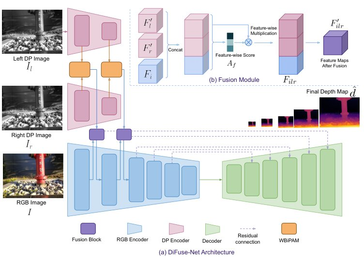
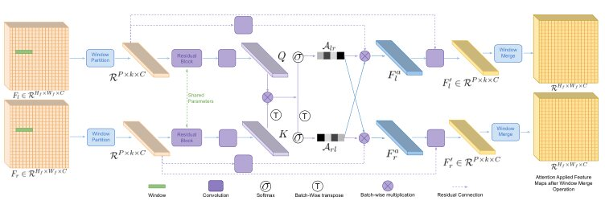
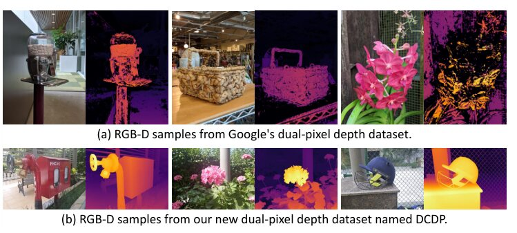
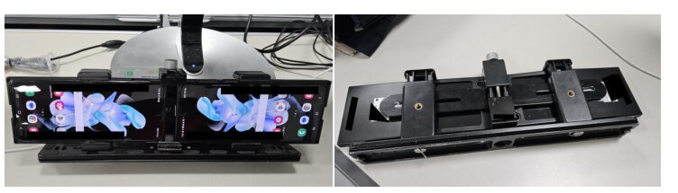
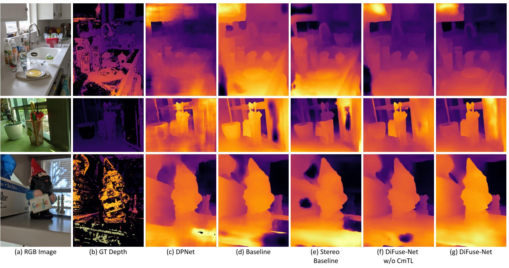
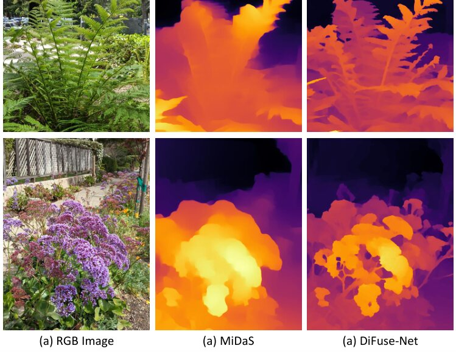

DiFuse-Net: RGB and Dual-Pixel Depth Estimation using Window Bi-directional Parallax Attention and Cross-modal Transfer Learning
Depth from the dual-pixel sensor already inside your phone camera: sharper, denser and lighter than monocular and DP baselines.
Samsung Research India Bangalore
- 9.9Mparameters, vs 345M for MiDaS v3.1 BEiT-L
- 5,000 + 700train and test samples in the new DCDP dataset
- 0.07991-SRCC on Google DP, vs 0.1520 for DPNet
Abstract
Depth estimation is crucial for intelligent systems, enabling applications from autonomous navigation to augmented reality. While traditional stereo and active depth sensors have limitations in cost, power, and robustness, dual-pixel (DP) technology, ubiquitous in modern cameras, offers a compelling alternative. This paper introduces DiFuse-Net, a novel modality decoupled network design for disentangled RGB and DP based depth estimation. DiFuse-Net features a window bi-directional parallax attention mechanism (WBiPAM) specifically designed to capture the subtle DP disparity cues unique to smartphone cameras with small aperture. A separate encoder extracts contextual information from the RGB image, and these features are fused to enhance depth prediction. We also propose a Cross-modal Transfer Learning (CmTL) mechanism to utilize large-scale RGB-D datasets in the literature to cope with the limitations of obtaining large-scale RGB-DP-D dataset. Our evaluation and comparison of the proposed method demonstrates its superiority over the DP and stereo-based baseline methods. Additionally, we contribute a new, high-quality, real-world RGB-DP-D training dataset, named Dual-Camera Dual-Pixel (DCDP) dataset, created using our novel symmetric stereo camera hardware setup, stereo calibration and rectification protocol, and AI stereo disparity estimation method.
Contributions
- Modality-decoupled architecture. RGB and DP images are processed separately: the RGB branch supplies global scene understanding, while a dedicated DP branch resolves the defocus disparity of each pixel.
- WBiPAM. A window bi-directional parallax attention module inside a siamese DP encoder extracts defocus disparity at multiple scales.
- Dynamic fusion. A fusion module adaptively combines RGB and DP features, so each modality helps where the other is weak (for example, DP disparity is unreliable in texture-less regions).
- Cross-modal transfer learning (CmTL). Depth priors from large-scale RGB-D datasets are transferred to the RGB-DP-D setting, where such datasets are scarce.
- DCDP dataset. A scalable way to capture RGB-DP-D data with dense, high-quality ground truth, using two smartphones in a symmetric stereo rig.
Method
Naively concatenating RGB and DP images hurts accuracy, because the two carry different information. RGB gives global context for ordering objects in depth. DP gives local disparity cues, but those are weak in texture-less regions. DiFuse-Net therefore encodes them independently and fuses the features before a UNet-style decoder predicts the depth map.

Window bi-directional parallax attention
DP disparity is confined to a small range along the epipolar line, typically within eight pixels for smartphone cameras. WBiPAM exploits this by attending only within a narrow horizontal window, computing cross-attention in both directions between the left and right DP feature maps.

The DCDP dataset
Existing RGB-DP datasets have sparse, noisy ground truth. We built a symmetric stereo rig from two smartphones, calibrated and rectified the pairs, estimated disparity with an AI stereo model, and manually screened the results to mask unreliable regions. The Dual-Camera Dual-Pixel (DCDP) dataset has 5,000 training and 700 test samples.


Results
DiFuse-Net outperforms DPNet, an RGB+DP baseline and a stereo-trained baseline on every metric (lower is better).
| Model | 1 − SRCC ↓ | AIWE-1 ↓ | AIWE-2 ↓ |
|---|---|---|---|
| DPNet | 0.1520 | 0.0181 | 0.0268 |
| Baseline | 0.0927 | 0.0142 | 0.0218 |
| Stereo Baseline | 0.0911 | 0.0137 | 0.0216 |
| DiFuse-Net | 0.0799 | 0.0128 | 0.0202 |

Versus large monocular models
With only 9.9M parameters, DiFuse-Net beats MiDaS v3.1 (345M parameters) and ZoeDepth on the same test set, because it uses the DP signal.
| Model | 1 − SRCC ↓ | AIWE-1 ↓ | AIWE-2 ↓ |
|---|---|---|---|
| MiDaS v3.1 BEiT-L-512 | 0.0971 | 0.0168 | 0.0267 |
| ZoeDepth | 0.1168 | 0.0272 | 0.0379 |
| DiFuse-Net | 0.0799 | 0.0128 | 0.0202 |

Benchmark on DCDP
| Model | 1 − SRCC ↓ | AIWE-1 ↓ | AIWE-2 ↓ |
|---|---|---|---|
| DPNet | 0.1522 | 0.0087 | 0.0128 |
| Baseline | 0.0928 | 0.0068 | 0.0104 |
| Stereo Baseline | 0.0912 | 0.0066 | 0.0098 |
| DiFuse-Net | 0.0878 | 0.0062 | 0.0092 |
BibTeX
@inproceedings{swami2025difusenet,
title = {DiFuse-Net: RGB and Dual-Pixel Depth Estimation using Window Bi-directional Parallax Attention and Cross-modal Transfer Learning},
author = {Swami, Kunal and Gupta, Debtanu and Muduli, Amrit Kumar and Jaiswal, Chirag and Bajpai, Pankaj Kumar},
booktitle = {IEEE/RSJ International Conference on Intelligent Robots and Systems (IROS)},
year = {2025},
note = {arXiv:2506.14709}
}